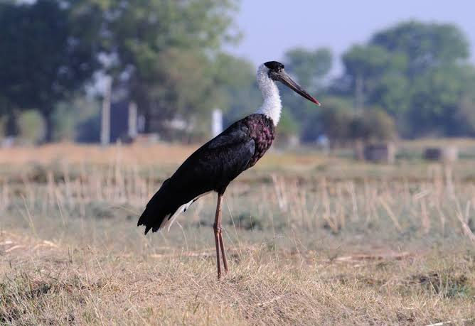

Wolly Necked Strok
Birds
The woolly-necked stork or whitenecked stork is a large wading bird in the stork family Ciconiidae. It breeds singly, or in small loose colonies. It is distributed in a wide variety of habitats including marshes in forests, agricultural areas, and freshwater wetlands.
Scientific name: Ciconia episcopus
Mass: 2.1 kg
Conservation status: Vulnerable (Population decreasing)
Phylum: Chordata
Higher classification: Ciconia
Order: Stork
The woolly-necked stork or whitenecked stork (Ciconia episcopus) is a large wading bird in the stork family Ciconiidae. It breeds singly, or in small loose colonies. It is distributed in a wide variety of habitats including marshes in forests, agricultural areas, and freshwater wetlands.
The woolly-necked stork is a medium-sized stork at 75–92 cm tall. The iris is deep crimson or wine-red. The stork is glistening black overall with a black "skull cap", a downy white neck which gives it its name.
The lower belly and under-tail coverts are white, standing out from the rest of the dark coloured plumage. Feathers on the fore-neck are iridescent with a coppery-purple tinge.
These feathers are elongated and can be erected during displays. The tail is deeply forked and is white, usually covered by the black long under tail coverts.
It has long red legs and a heavy, blackish bill, though some specimens have largely dark-red bills with only the basal one-third being black. Sexes are alike.
Juvenile birds are duller versions of the adult with a feathered forehead that is sometimes streaked black-and-white. The African birds are described as having the edges of the black cap diffused or with a jagged border compared to a sharp and clean border in the Asian birds. Sexes are identical, though males are thought to be larger.
When the wings are opened either during displays or for flight, a narrow band of very bright unfeathered skin is visible along the underside of the forearm. This band has been variously described as being "neon, orange-red", "like a red-gold jewel", and "almost glowing" when seen at close range.
Small nestlings are pale grey with buffy down on the neck, and a black crown. At fledging age, the immature bird is identical to the adult except for a feathered forehead, much lesser iridescence on feathers, and much longer and fluffier feathers on the neck.
English common names for this species include Whitenecked Stork, Whiteheaded Stork, Bishop Stork, and the Parson-bird. More recently, the African and Asian populations are considered to be two different species,
the African and the Asian Woolly-neck. This is based purely on geographical isolation, but there is no morphological or phylogenetic evidence yet to support this split.
Biology of Wolly Necked Strok
Distribution and habitat
It is a widespread tropical species which breeds in Asia, from India to Indonesia, and throughout Africa. It is a resident breeder building nests on trees located on agricultural fields or wetlands, on natural cliffs, and on cell phone towers.
They use a variety of freshwater wetlands including seasonal and perennial reservoirs and marshes, crop lands, irrigation canals and rivers.
They are attracted to fires in grasslands and crop fields where they capture insects trying to escape the fire. They use ponds and marshes inside forests in both Africa and Asia, especially in south-east Asia where they use grassy and marshy areas in clearings in evergreen rainforests. In India, they are an uncommon species in coastal habitats.
They use coastal areas in Africa also, with birds in Sulawasi observed to be eating sea snakes, and birds on the Kenya coast foraging in coral reefs and mudflats.
In an agricultural landscape in north India, woolly-necked storks preferred fallow fields during the summer and monsoon seasons, and natural freshwater wetlands during the winter.
Diet
The woolly-necked stork walks slowly and steadily on the ground seeking its prey, which like that of most of its relatives, consists of amphibians, reptiles and insects.
Breeding
Typically, a large stick nest is built on a tree, and two to five eggs form the typical clutch, with five eggs being very rare. Birds commonly use both forest trees and solitary trees in agricultural areas to build nests.
In India, nests are increasingly being observed in urban areas on cell phone towers. Riverside cliffs are also used occasionally as nest sites.